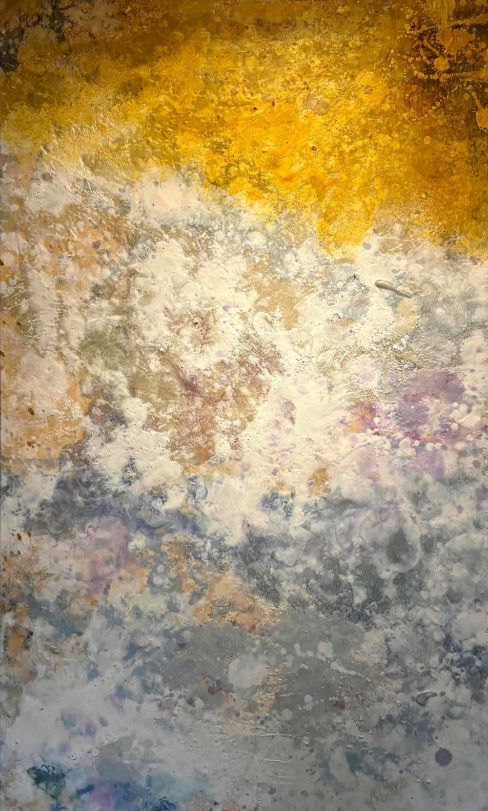
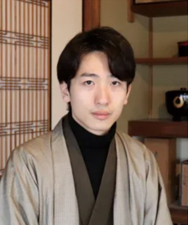
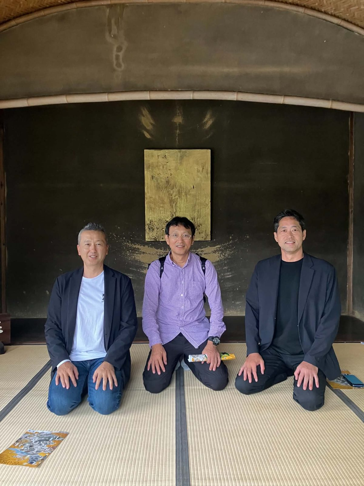
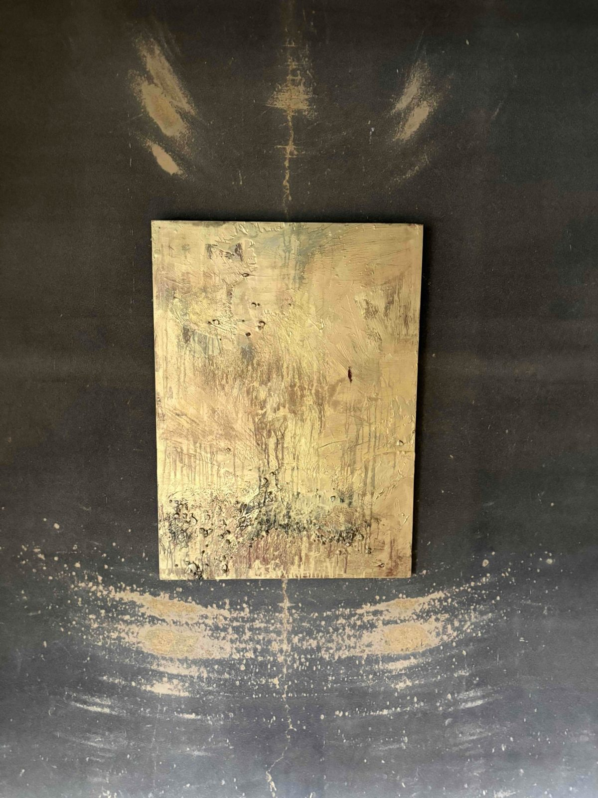
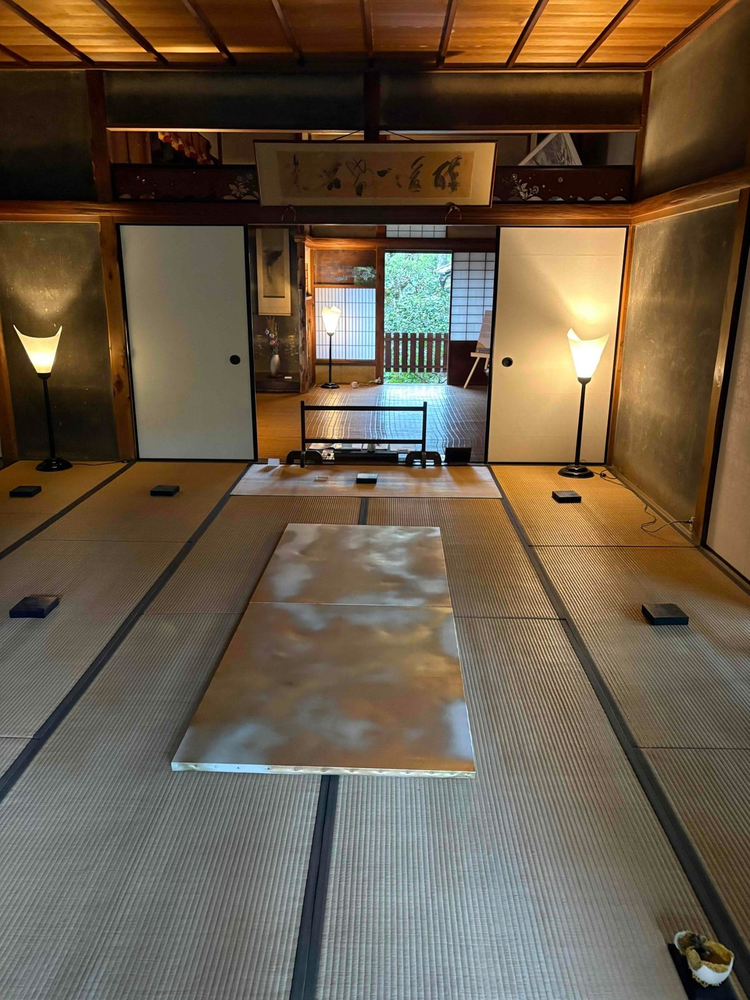
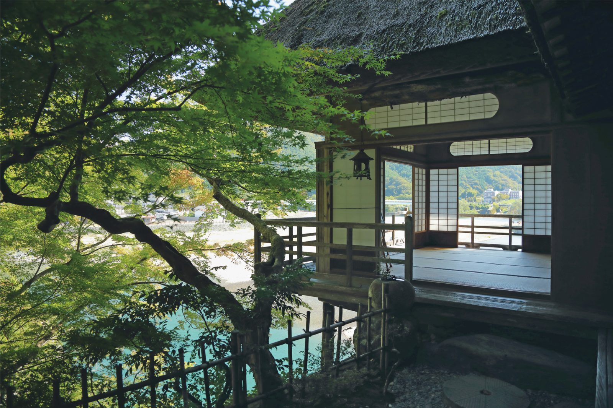

新谷藩・加藤家の末裔。古代の蜜蝋画と日本の伝統画材を融合した独自の表現を追求しながら、先祖ゆかりの武家屋敷を再生し、アートを通じて大洲の風土を未来の子どもたちへ手渡そうとしている。

絵画・茶・歌を嗜んだ文人大名、新谷藩・加藤家の末裔。藩主ゆかりの屋敷と、そこに残る掛け軸や資料、美術品を受け継ぐ。
美大在学中にニューヨークで個展デビュー。蜜蝋と日本の伝統画材を融合させた独自の画法で、国内外で作品を発表している。
株式会社STILLLIFEを設立。武家屋敷の再生、アーティスト・イン・レジデンス、アートと伝統を組み合わせた文化観光に取り組む。

蜂の巣から生まれる画材で、
人と自然の循環を描く。
古代エジプトの画法で用いられた蜜蝋（蜂の巣のロウ）と、日本の伝統的な画材を融合させた独自の画法。作品は「地球の記憶を留める絵画」と位置づけられている。
一見ヨーロッパ美術のようなテイストを持ちながら、根底には日本の宗教心・信仰心が流れる。日本人には西洋的に、ヨーロッパの人にはオリエンタルに見える ―― 本人はこれを「二重性のある作品」と語る。
蜜蝋を採ることは蜂の家を壊すことでもある。その葛藤が、蜜蜂の生息地を守る活動や、作品を蜜蜂に「返す」という発想につながっている。
素材が画材になり、画材がまた素材に戻る。作品を巣箱として蜜蜂に「返す」発想から生まれた、循環を体現する作品。
蜜蜂と養蜂家との協働で制作した蜜蝋画シリーズ。人と光、太陽信仰、「開かれた庭」の関係を重層的に描く。
蜜蝋のほか、木蝋や伊予砥石など地域の自然素材を用いて、人と自然のつながりを探る作品も発表している。
大洲市新谷に残る、約180年前に新谷藩7代藩主が建てた武家屋敷「旧加藤邸」。現在は「團上邸 麗楓館（Dangami House）」として、團上氏がその再生と運営に取り組んでいる。庭には梅・桜・紅葉など樹齢100年を超える木々が残り、「紅葉御殿」の愛称でも親しまれてきた。
目指すのは、加藤家が育んできた文人文化の歴史を取り込んだアーティスト・イン・レジデンス。国内外のアーティストや研究者が滞在し、創作し、発表できる場として、現代アート・茶の湯・武家文化が調和する「生きた文化財」を構想している。
2025年には修繕費用を募るクラウドファンディングを実施し、目標を上回る支援を集めた。2024年冬には自然画家が滞在制作し、その作品が大洲のアートイベントで展示されるなど、すでに実践が始まっている。
※ 整備・構想段階のものを含みます。
團上氏は武家屋敷の保存を通じて、現代の侍の役割を「文化エージェント」だと捉えている。文化を守り、媒介し、次へつなぐ ―― アーティストやキュレーターの仕事は、侍らしい仕事なのだという。
また、文化財は「古いものだから大事にする」というルールだけでは残らない。なぜ大事なのかを表現し、コンテンツにすることが重要だと語る。
大洲の文化財を舞台に、国内外のアーティストが作品を制作・展示する城下町回遊型のアートプロジェクト。3回目となる2026年のテーマは「おおず ―― 場を巡る、知覚の変容」。團上氏は参加アーティストとして、名勝・臥龍山荘で作品を展示した。




今後はパリ、ロンドンでの展覧会も予定。さらに大洲城を起点に、道後温泉・砥部焼・松山城など愛媛の文化資源を巻き込んだ国際芸術祭を構想しており、作家活動と並行して「愛媛文化のコンダクター（指揮者）」を担うことを次の挑戦に掲げている。